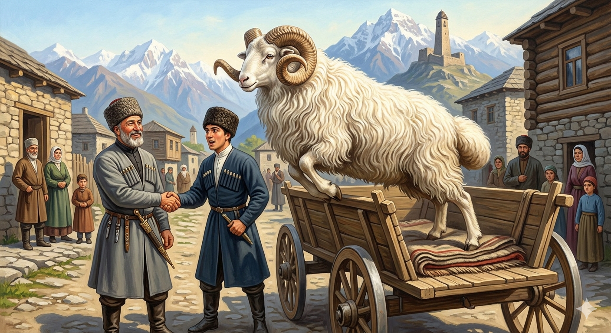

И.А. Дахкильгов. Хьехаме дувцарш - поучительные рассказы-притчи.
И.А. Дахкильгов. Хьехаме дувцарш - поучительные рассказы-притчи. Из ингушского фольклора.

Ӏомабенна ка
ЧӀоагӀа куц долаш цхьа ка хиннаб: дегӀа боккха болаш; хьайза, кӀай, дӀаьха тха долаш, боккха кур болаш; дӀабагӀаш думе болаш. Из бе кхо болаш хиларах, дика-во хиннача дӀай-хьай кхухьаш хиннаб из ка. Цхьанне коа боссабича, из ца а бувш, цхьа ха яьннача гӀолла базар тӀа бугаш хиннаб, бехкача, пайда дукхагӀа хургболандаь. Базар тӀа бохкаш-эцаш, бохкаш-эцаш, карара кара сов дукха бувлаш хиларах Ӏемаб, йоах, из ка: эцачои бохкачои "хӀа" аьнна кулгаш вӀашкатоххашехьа а, кхоссабеле, эцачун ворда чу нийсбеле дӀабужаш хиннаб из Ӏема ка.
РУССКИЙ
Баран научился
Был некогда красивый баран: крупный, с длинной, белой и волнистой шерстью, большими рогами и увесистым курдюком. Настолько он был необыкновенен, что его возили как подарок по разным случаям. Скажем, подарят его кому-то по поводу торжества, а новый хозяин его потом ведет на рынок, потому что, продав его, извлечет больше пользы. И так часто барана то дарили, то затем продавали, что он, говорят, прыгал в арбу покупателя и удобно располагался в ней, лишь только продавец и покупатель ударят по рукам.
ENGLISH
The ram has learnt
There was once a beautiful ram: large, with long, white, wavy fleece, large horns and a heavy fat tail. He was so extraordinary that he was sent as a gift on various occasions. For instance, he might be given to someone to mark a celebration, and his new owner would then take him to market, because selling him would be more profitable. And so often was the ram given as a gift and then sold that, they say, he would leap into the buyer's cart and settle himself comfortably there the moment the seller and buyer shook hands.
НОХЧИЙН
Ӏамабелла ка
ЧӀогӀа куц долуш цхьа ка хилла: дегӀан боккха болуш; хьаьвзина, кӀай, деха тха долуш, боккха кур болуш; дӀаболлуш дума болуш. Иза сел башха хиларах, дикан-вон хиллаче дӀай-схьай кхоьхьуш хилла и ка. Цьанне кевна боьссича, иза бен а ца буьйш, цхьа хан йаьлчухула базар тӀе буьгуш хилла, боьхкича, пайда дукхах хирболу дела. Базарахь бухкуш-оьцуш, бухкуш-оьцуш, карара кара сов дукха буьйлуш хиларах Ӏемина, боху, иза ка: оьцучоий бухкучоий "хӀа" аьлла куьйгаш вовшахтуххушехьа а, кхоссалой, оьцучун вордан чу нислой дӀабуьжуш хилла и Ӏемина ка.
ПОГОВОРКИ
БӀаргашта хоза хетарах пайда бац, дего тӀаэцаш ца хилча. Пустое, что нравится глазу; дело, что принято сердцем. There's no use in what merely pleases the eye — only in what the heart accepts. БӀаьргашна хаза хетарх пайда бац, даго тӀеоьцуш ца хилча.Дукха хи тӀа кхихьа кхаба хи йисте йисай. Много по воду носили кувшин, он у ручья и остался. The jug carried to the water so often stayed behind at the spring. Дукха хи тӀе кхехьна кхаба хин йистехь йисна.ЖӀале кӀаза массанена хьесталу, кхийча, даьне хьесталу. Щенок ко всем ластится, а вырастет – только к хозяину. A puppy fawns over everyone, but once grown, only over its master. ЖӀаьлин кӀеза массарна хьестало, кхиъча, ден хьестало.“Йича, хиннай дарш”, - аьннад дас, гӀадж техха газа муӀаш дӀаяхийта. “Если пожелать, и козу можно сделать безрогой”, - сказал хозяин и палкою сшиб рога козы. "If you really wish for it, you could even hornless a goat," said the master, knocking off the goat's horns with a stick. "Йича, хилла дирша", - аьлла дас, гӀаж тоьхха гезан маӀаш дӀайахийтина.Йоккха гӀала а цхьацца кхера булаш мара еттаяц. И большую башню складывают по камню. Even a great tower is built one stone at a time. Йоккха гӀала а цхьацца кхера буьллуш бен йоьттина йац.Корта боккха-м истара а гамажа а хул. Голова-то большою бывает и у быка, и у буйвола. A big head can be found on an ox or a buffalo too. Корта боккха-м стеран а гомашан а хуьлу.Кхаанга Ӏомадаь бежан тӀехьара дӀадалац. Приученная к лакомствам скотина не отстает от хозяина. Livestock accustomed to treats never strays far from its owner. Кхаанга Ӏамийна бежан тӀаьхьара дӀадалац.Кхоссаенача пхьида а хет ше гаьна кхоссаеннай аьнна. И лягушка, прыгнув, считает, что она очень далеко прыгнула. The frog too thinks it has jumped very far. Кхоссаеллачу пхьидан а хета ша гена кхоссайелла санна.Мекхех хьекхарах думех пайда бац, из буаш беце. Нет толку, что курдюком мажешь по усам, а не ешь его. There's no use smearing your moustache with fat if you don't actually eat the fat tail. Мекхах хьекхарх думех пайда бац, иза бууш бацахь.Хозалга ма хьежа, оамалга хьежа. Не смотри на красоту, а смотри на характер. Don't look at beauty — look at character. Хазалле ма хьежа, амале хьежа.Хозача къамаьло никъ лоацбаьб. Приятная беседа дорогу сократила. Pleasant conversation shortened the road. Хазачу къамело некъ бацбина.Эггар хозагӀа йолча йоӀах а “фоарт йӀаьха я цун” ала цаӀ кораваьв. Нашелся хулитель который даже про самую красивую девушку сказал: “У нее шея длинная”. There was even one man who found fault with the most beautiful girl, saying: "Her neck is too long." Уггар хазах йолчу йоӀах а "ворт йеха йу цуьнан" аьлла цхьаъ карийна.Ӏа сога “говра хьовзае” ях, со говро удаву. Ты говоришь “гарцуй”, а меня конь сам несет. You say "turn the horse around," but the horse is already carrying me forward. Ахь соьга "говр хьовзае" бах, со говро идаво.